AVED V80 - CIPS Configuration¶
CIPS¶
The processing system (PS), platform management controller (PMC), and CCIX PCIe module (CPM) modules are grouped together and configured using the control, interface, and processing system (CIPS) IP core. The PS contains the APUs, RPUs, and peripherals (I2C, UART, SPI, etc.). It shares the DDRMC with the PL via the NoC. The PMC is responsible for boot and configuration management, power management, reliability and safety functions, dynamic function eXchange (DFX), life cycle management and I/O peripherals. The CPM provides the primary interfaces for designs, such as AVED, following the server system methodology. It has hardened connections to the NoC which is used to access the DDR and other hardened IP. The CIPS configuration is described below. All settings differing from the default settings are indicated in the GUI captures below.
A description of the CIPS configuration options can be found in https://docs.xilinx.com/r/en-US/pg352-cips.
CCIX PCIe Module (CPM5)¶
CPM5 GUI Configuration¶
A description of the CPM configuration options can be found here:
CPM5 Basic Configuration¶
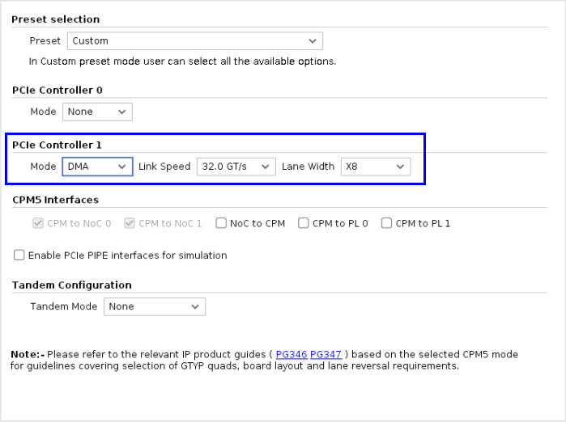
CPM5 PCIE Controller 1 Configuration¶
Basic¶
Configuration Mode: Advanced
AVED uses PCIe extended configuration space. There are multiple settings that need to be enabled to allow for this functionality. First, the mode must be changed to advanced. This enables the MSI-X cap, advanced options, and interface options GUI tabs. Then, in the advanced options tab, the configuration space must be changed to ‘Extended Large’. This will allow the PCIe extended configuration space to be extended from its default configuration. Finally, in the Interfaces tab, enable ‘Extended Config Interface’. This interface connects to the HW discovery IP, which provides vendor specific extended configuration information.
Functional Mode: QDMA
Used for high bandwidth DDR accesses.
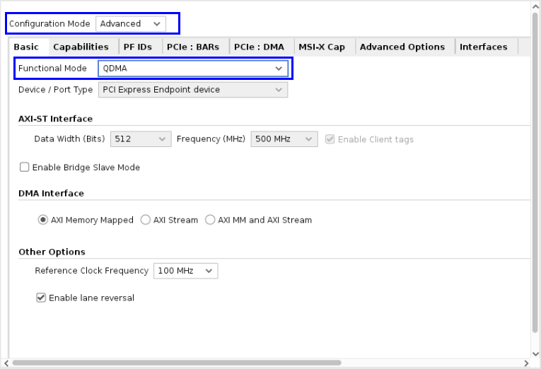
Capabilities¶
Total Physical Functions: 2
Two Physical Functions (PF) are used in the AVED design. PF0 allows the card to be managed by the PCIe host. PF1 allows DMA transfers with the PCIe Host. Additional PFs can be enabled as required by user applications.
AVED PCIe uses the synchronous clock from the PCIe edge connector.
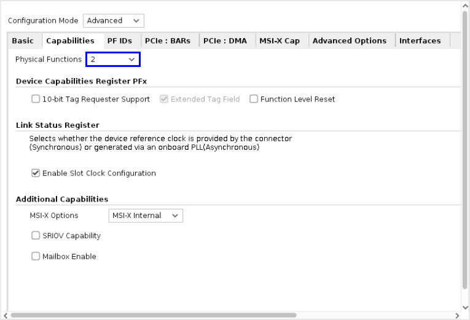
PF IDs¶
These values must match the settings for the AVED card as indicated in the table below. The greyed out settings are not used by AVED.
{kind=link}
PF - ID Initial Values: Change values to those below to match AMD specific settings
Device ID PF 0
V80: 50b4/50b5
Subsystem ID PF 0: 000e
Class Code: Change values to those below
Base Class Value PF 0: 12 : Processing Accelerator – vendor-specific interface
Subclass Value PF 0: 00 : Processing Accelerator – vendor-specific interface
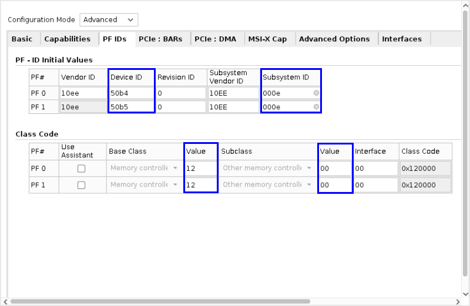
PCIE: BARs¶
The configuration for the PF0 AXI Bridge Master and PF1 DMA is shown below. These options enable the Master AXI interface within the CIPS IP and is used to interface with AXI peripherals, and also allows for PCIe Host DMA transfers to the memory devices.
CPM5 can support up to six 32-bit BARs or three 64-bit BARs per PF. AVED only requires two physical functions. PF0 uses a single 64-bit BAR mapping to a 256MB address space (BAR0). As a result, PCIe BAR0 is mapped to the first 256MB of the PL memory space: 0x201_0000_0000 - 0x201_0FFF_FFFF (256MB). For additional information on address mapping in AMD Versal™ devices, refer to the following link: https://docs.xilinx.com/r/en-US/am011-versal-acap-trm/16-TB-Address-Map. Since the address space for PCIe and AXI is different, address translation is required.
PF1 is configured to use the DMA.
PF0

PF1

PCIe: DMA¶
This functionality is not used by AVED.
{kind=link}
MSI-X Cap
MSI-X capabilities for PF1 were enabled to be used in conjunction with the DMA.
{kind=link}
Advanced Options¶
AVED uses vendor specific extended capabilities (VSEC) with the large extended configuration space. The extended capabilities contain the entries for the HW Discovery IP, UUID, gcq_m2r, and AXI remapping (AVED V80 - Base Logic). To minimize design complexity, AVED does not enable virtualization capabilities, so ARI and ACS are disabled.
Verify Alternate Routing ID (ARI) Capability: Unselectable
Disable Access Control Services (ACS) Capability: De-Selected
Verify Advanced Error Reporting (AER) Capability: Selected
PCI Express Extended Configuration Space Enabled: Extended Large
Enable Interface Options¶
The Extend Config Interface option enables the interface to allow PCIe to transfer configuration information with the user application. In AVED, this port, pcie1_cfg_ext, is connected to the Hardware Discovery IP.
Extended Config Interface: Select
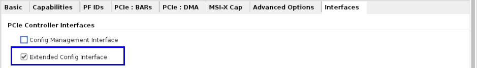
CPM5 TCL Configuration¶
The above configuration can be enabled using the TCL configuration settings below.
CONFIG.CPM_CONFIG { \
PS PMC¶
There are numerous processor subsystem (PS) and platform management controller (PMC) settings. These settings (indicated below) align to the AVED design requirements. A description of the CIPS configuration options can be found in https://docs.xilinx.com/r/en-US/pg352-cips. Information on the PS/PMC can be found here: https://docs.xilinx.com/r/en-US/am011-versal-acap-trm/Processing-System-Architecture.
Processing Subsystem (RPU and APU)
The PS includes two Arm® Cortex®-R5F RPU processors and two Arm Cortex-A72 APU processors. These provide programmers with real-time and application operating environments.
Platform Management Controller (PMC)¶
When the system starts up, it is controlled by the PMC.
PS PMC GUI Configuration¶
There are numerous PS/PMC configuration settings. The settings below were made per the AVED design requirements.
Boot Mode¶
The Versal device is connected to 2Gb (256MB) OSPI for configuration and 64GB eMMC for storage. Both devices are 8-bits. These connections need to be enabled in PS PMC.
Note: eMMC1 cannot be used for boot since the pins are shared with OSPI.
OSPI: Primary Boot
https://docs.xilinx.com/r/en-US/am011-versal-acap-trm/Primary-Boot-Interfaces-Table
Mode: Single device interface (not Stacked)
Frequency: A requested frequency of 200MHz was requested (Max frequency is 200MHz).
SDO/EMMC0: Used for storage or secondary boot
https://docs.xilinx.com/r/en-US/ug1304-versal-acap-ssdg/Secondary-Boot-Process-and-Device-Choices
Slot Type: eMMC
Data Transfer Width: 8Bit
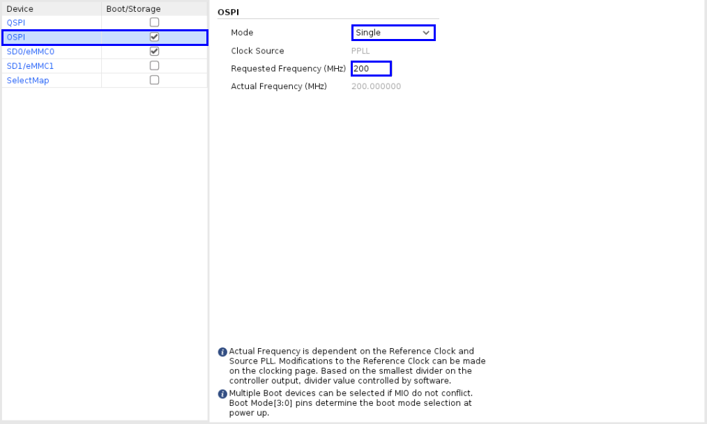
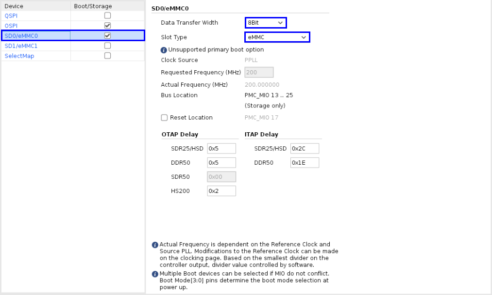
Peripherals¶
Enable the peripherals as indicated below. These connections are dependent upon the Versal device connections to the board and are described below. The pin locations for the peripheral are not set in the ‘Peripheral’ tab. Instead, they are set in the ‘IO’ tab
PCIe Reset¶
PCIe reset from the host is connected to the PMC MIO pins through a buffer. There is a reset for each PCIe controller to support bifurcation. Enable the PCIe reset, then to set the actual pin, switch to the IO tab.
IO → PS-Domain → PCIe Reset → CPM PCIE Controller 0 (End Point) → PMC_MIO_24
IO → PS-Domain → PCIe Reset → CPM PCIE Controller 1 (End Point) → PMC_MIO_25
https://docs.xilinx.com/r/en-US/am011-versal-acap-trm/PCIe-Resets-on-MIO-Pins
UART0 / UART1¶
AVED connects to two UARTs on the PS MIO (LPD) for debug purposes.
IO → PS-Domain → UART0 → PS_MIO_8 and PS_MIO_9
IO → PS-Domain → UART1 → PS_MIO_20 and PS_MIO_21
https://docs.xilinx.com/r/en-US/am011-versal-acap-trm/UART-I/O-Signals
UART0
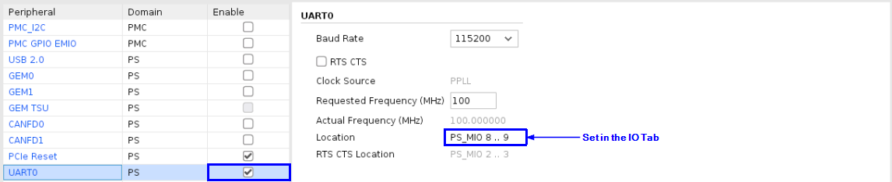
UART1
{kind=link}
SPI0¶
The Versal device connects to SPI0 in the PS MIO (LPD). This is used for logging flash.
IO → PS-Domain → SPI0 → PS_MIO_12 through PS_MIO_17
IO → PS-Domain → SPI0 → SS0 → PS_MIO_15
https://docs.xilinx.com/r/en-US/am011-versal-acap-trm/SPI-Controller-I/O-Signals
SPI0
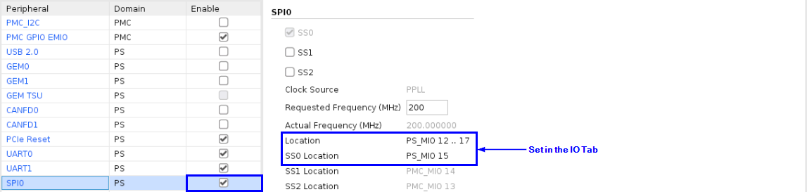
LPD_I2C0 / LPD_I2C1¶
The Versal device connects to both I2C controllers in the LPD. I2C0 is the main I2C bus used for management of the board power, clocks, temperatures, etc. I2C1 is used for the management of the QSFPs (V80 only).
IO → PS-Domain → I2C0 → PS_MIO_2 and PS_MIO_3
IO → PS-Domain → I2C1 → PS_MIO_0 and PS_MIO_1
https://docs.xilinx.com/r/en-US/am011-versal-acap-trm/LPD-I2C-Interface-Signals
LPD_I2C0
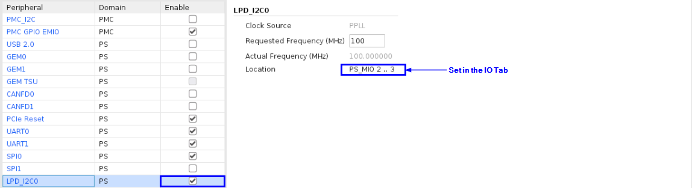
LPD_I2C1
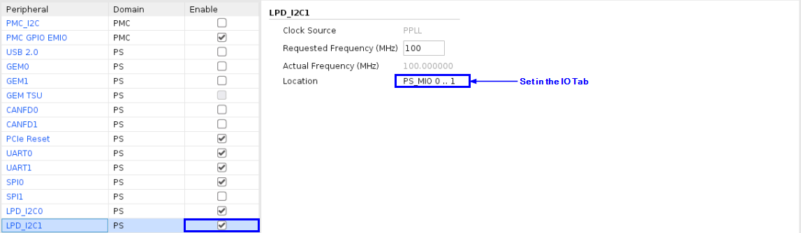
TTC0 / TTC1 / TTC2 / TTC3¶
The triple timer counters (TTCs) can generate periodic interrupts or can be used to count the widths of signal pulses from an MIO pin or from the PL. In AVED, the TTCs are used by SW to generate periodic interrupts for runtime purposes. The TTCs cannot be used to monitor any HW functionality through the PMC MIO or PS MIO pins because there are not any spare MIO pins.
https://docs.xilinx.com/r/en-US/am011-versal-acap-trm/Triple-Timer-Counters
TTC0
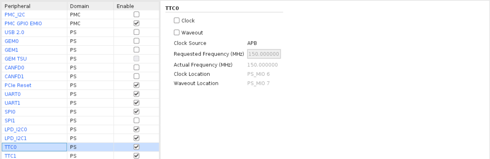
TTC1
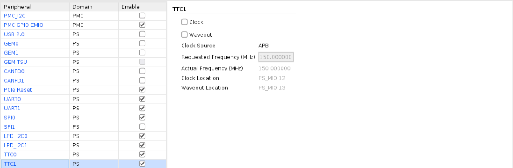
TTC2
TTC3
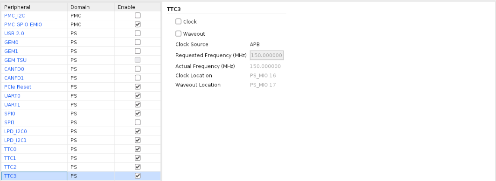
IO¶
PMC peripheral pins can have more than one MIO pin assignment option. More information on the different selections can be found here: https://docs.xilinx.com/r/en-US/am011-versal-acap-trm/PMC-MIO-Pin-Table. All the MIO pins (PMC, MIO, and PS MIO) are connected per the AVED design requirements. While PMC Bank 1 pins 45:47 appear to be unused in the capture below, there are signals connected to these pins for future growth.
When setting these pins in the GUI, first set the I/O pins in the Peripheral ‘I/O’ column. Be careful to select appropriately between PMC_MIO and PS_MIO. Then set the rest of the I/O in PMC Bank 0, PMC Bank 1, and PS Bank 2 columns.
The GPIO direction for each bank is set per the description below. They are also included as TCL in PS PMC TCL Settings.
PMC Bank 0: All the GPIO 0* signals are outputs except MIO_11, which is an input.
PMC Bank 1: All the GPIO 1* signals are outputs except MIO_33, MIO_37, MIO_41, MIO_48, MIO_49, MIO_50, which are inputs.
PS Bank 2: All the GPIO 2* signals are outputs except MIO_5, MIO_10, MIO_11, MIO_14, and MIO_25, which are inputs.
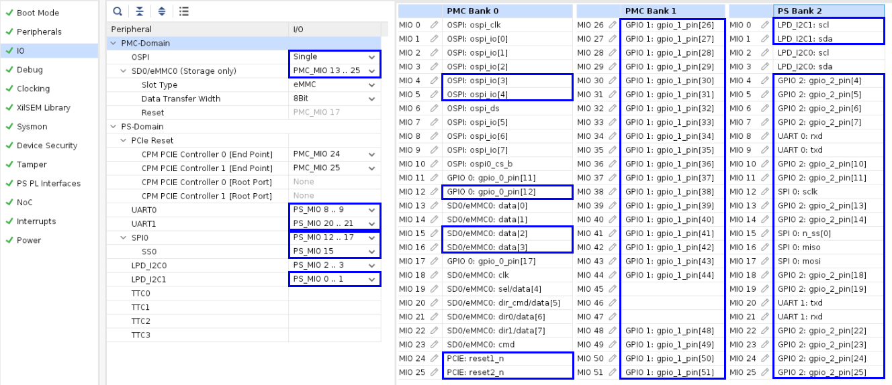
Debug¶
None of the debug settings are used. Leave all settings at Default.
PL BSCAN¶
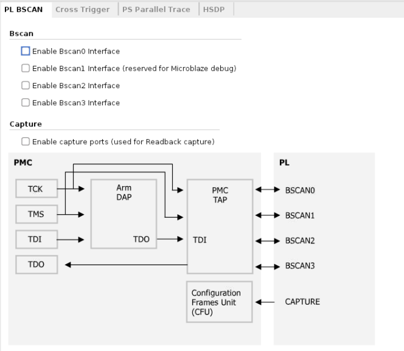
Cross Trigger¶
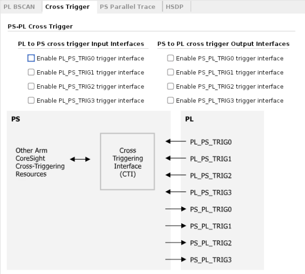
PS Parallel Trace¶
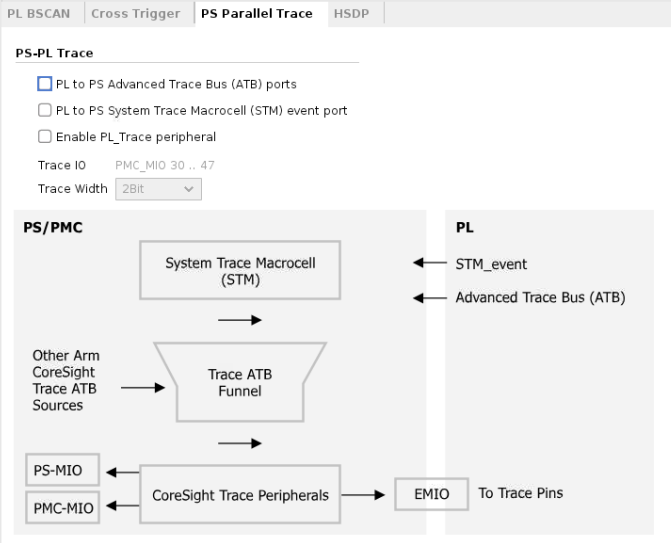
HSDP¶
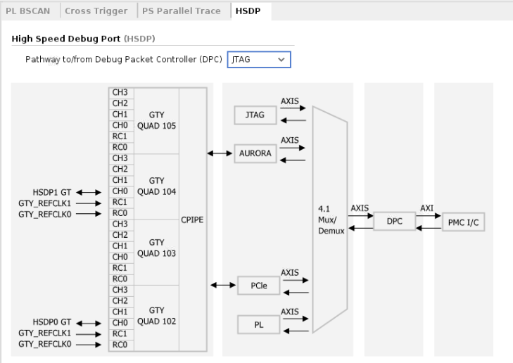
Clocking¶
Input Clocks¶
Change the input REF_CLK to match the board oscillator clock frequency (from 33.333MHz to 33.333333MHz).
REF_CLK: 33.333333
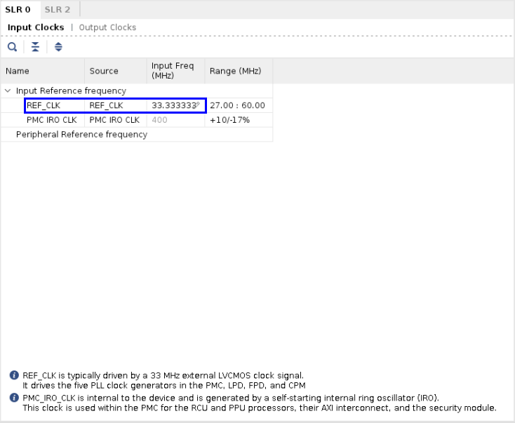
Output Clocks¶
SLR0
The Processor memory clocks (HSM0 and HSM1) are not used in AVED because it is a design requirement to use external 200MHz LVDS clocks for HBM and DDR MCs.
Enable the PL CLK 0, PL CLK 1, and PL CLK 2 and set the frequencies to 100MHz, 33.3333333MHz, and 250MHz (respectively). This creates the CIPs pl0_ref_clk, pl1_ref_clk, and pl2_ref_clk outputs from CIPS in the BD. PL CLK 0 (100MHz) is used for numerous AXI interfaces. PL CLK 1 is a free running clock used to generate other system clocks. PL CLK 2 is set to run at 250MHz. This is the frequency of the PCIe extended configuration interface.
Change the CPM_TOPSW clock to 1000MHz so the CPM runs at maximum frequency.
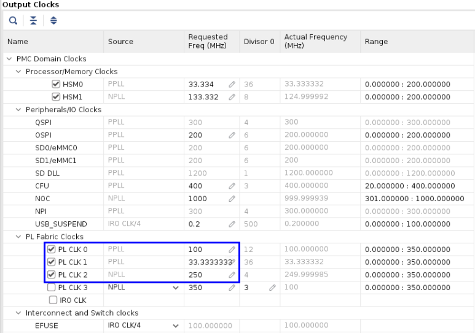
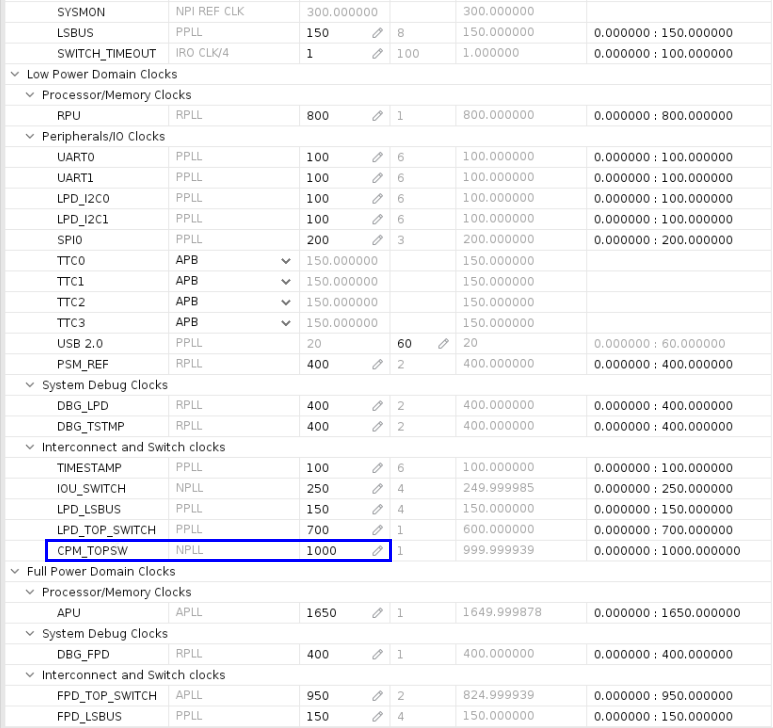
SLR1
There are not any options for SLR1 - this tab does not exist.
SLR2
Leave at the default setting. The Processor memory clocks (HSM0 and HSM1) are not used in AVED because it is a design requirement to use external 200MHz LVDS clocks for HBM and DDR MCs.
XilSEM Library
Leave all settings at Default. XilSEM is not used in AVED.
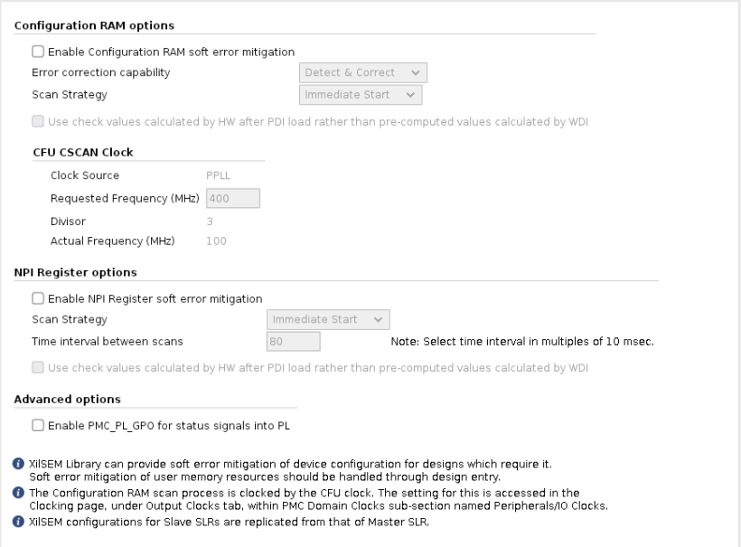
Sysmon¶
SLR0¶
Basic Configuration
Change the voltage averaging samples to 8.
{kind=link}
On Chip Supply
These are optional voltages that can be monitored by AMC for future use. The ADC and thresholds would need to be adjusted appropriately.
Additional information on the nomenclature can be found here: https://docs.xilinx.com/r/en-US/am011-versal-acap-trm/Power-Pins
VCC_PMC: PMC power domain
VCC_PSFP: PS full-power domain (FPD)
VCC_PSLP: PS low-power domain (LPD)
VCC_RAM: Block RAM, UltraRAM, and PL clocking network
VCCSOC: NoC, NPI, and DDRMC SoC power domain (SPD)
VCCINT: Internal logic (programmable logic, integrated hardware
VCCAUX: Auxiliary circuits
VCC_AUXPMC: Auxiliary for the PMC
VCCAUX_SMON: Analog for the ADC and other analog circuits in the system monitor
Monitor Configuration, PMC MIO, and PS MIO Banks
VCCO_500: PMC MIO bank 0 with dedicated analog signals DIO_A
VCCO_501: PMC MIO bank 1
VCCO_502: LPD MIO bank PS (PS_MIO)
VCCO_503: PMC dedicated I/O (DIO) bank - Config Bank Mode Pins and JTAG
Monitor DDR Banks Voltage
VCCO_700: CH0 DDR
VCCO_701: CH0 DDR
VCCO_702: CH0 DDR
Monitor GTYP Bank Voltages
GTYP_AVTT_104: Gigabit transceiver; analog transmit driver
GTYP_AVTT_105: Gigabit transceiver; analog transmit driver
GTYP_AVCC_104: Gigabit transceiver; analog internal circuits
GTYP_AVCC_105: Gigabit transceiver; analog internal circuits
GTYP_AVCCAUX_104: Gigabit transceiver; auxiliary analog transceivers
GTYP_AVCCAUX_105: Gigabit transceiver; auxiliary analog transceivers
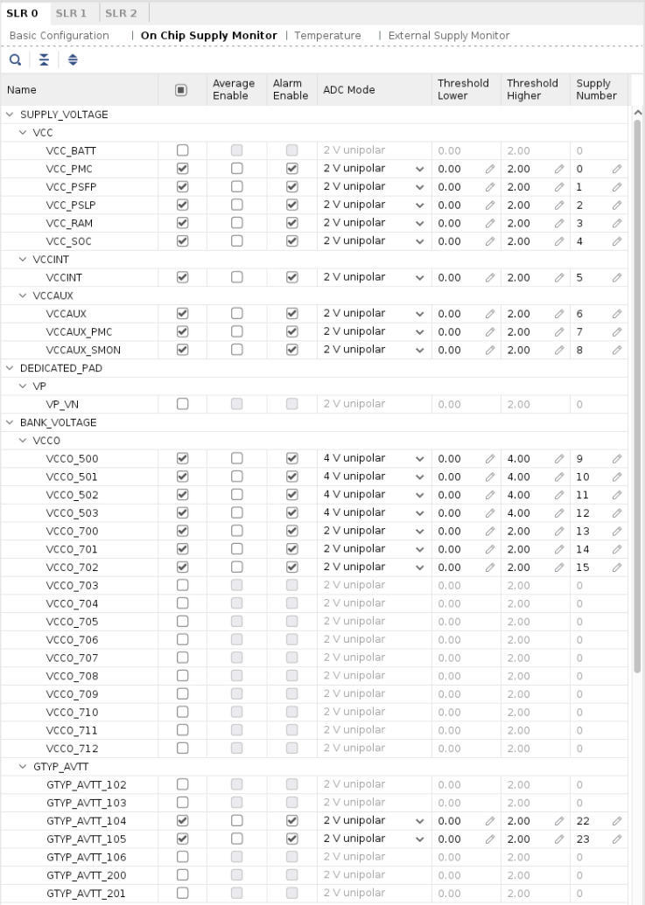
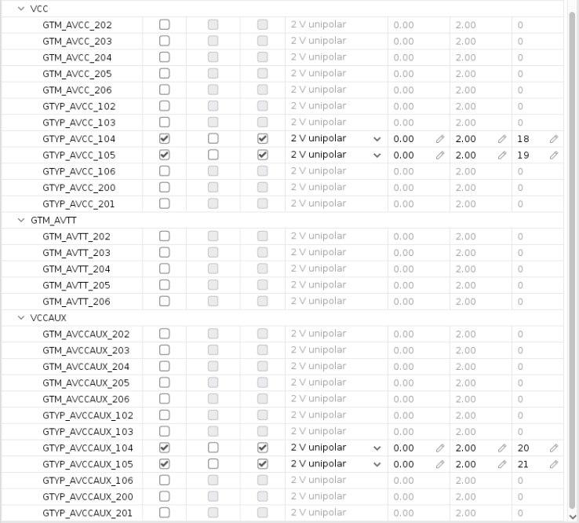
Temperature
Enable the over temperature check to help protect the Versal device and PCB.
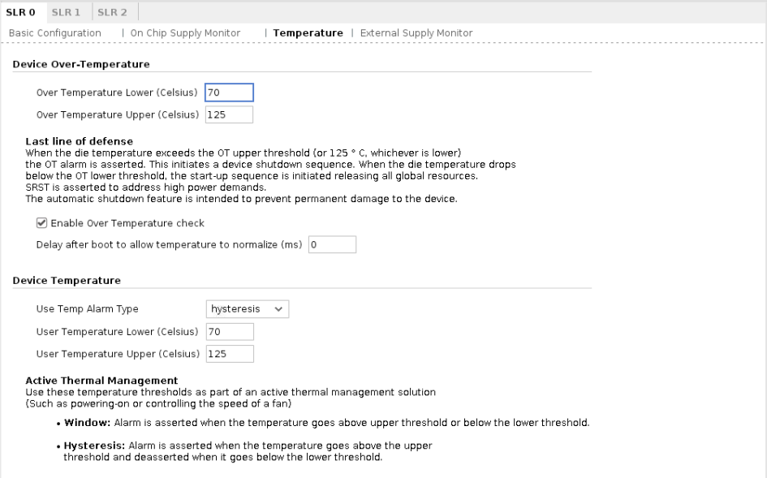
External Supply Monitor
None of the external supplies are monitored in AVED.
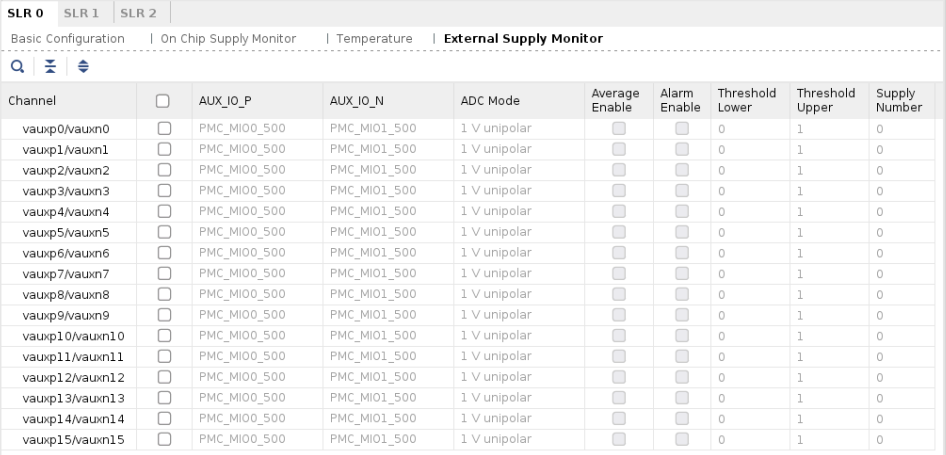
SLR1¶
On Chip Supply
None of the supplies in SLR1 are monitored in AVED.
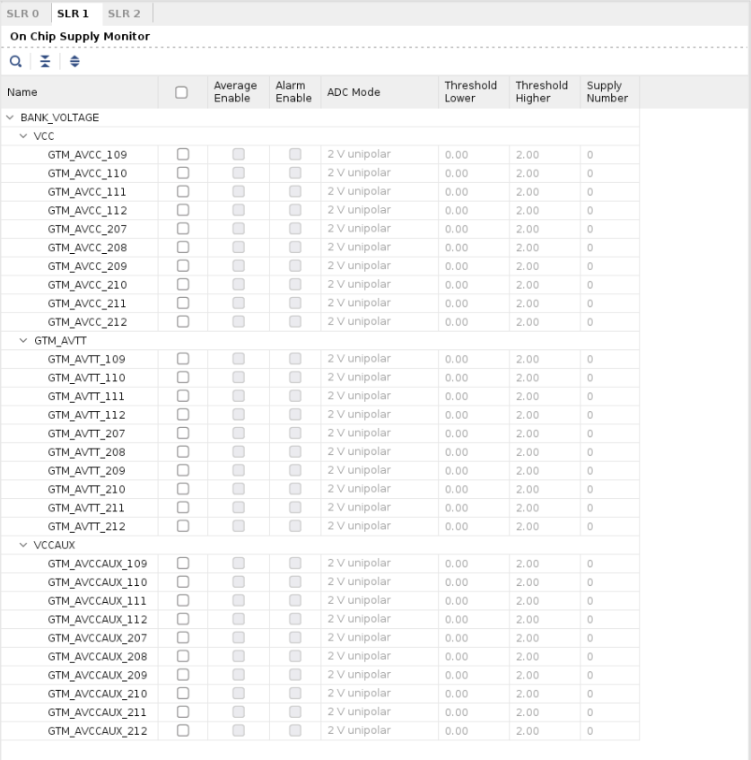
SLR2¶
On Chip Supply
None of the supplies in SLR2 are monitored in AVED V80.
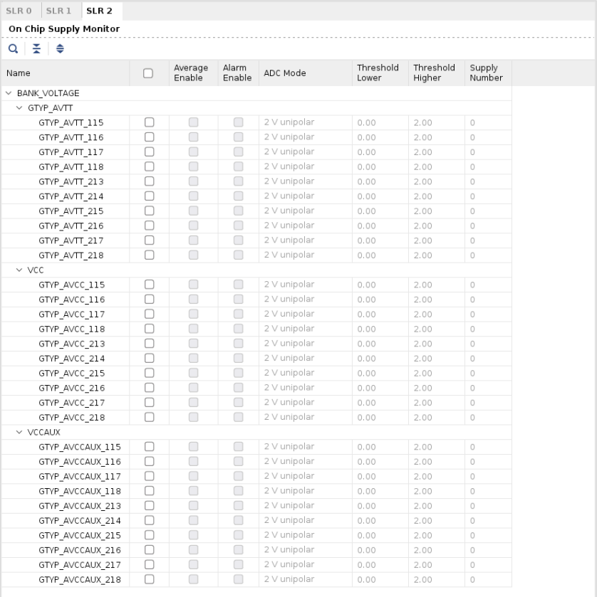
Device Security¶
SLR0¶
General
Select ‘Enable/Update Glitch Detector Settings (after BootROM handoff)’. This allows VCC_PMC to be changed to match the voltage setting of the AVED design requirements (0.88V).
The pulse width will ignore glitches less than the setting of 0.5ns.
Note: AVED does not enable a specific glitch detection response. If a response were required, it would need to be set up in the Tamper tab. AVED does not set any Tamper settings.
Unselect “Known Answer Tests (KATs)”. AVED does not use the Cryptographic engines, so there is no need to perform this test.
https://docs.xilinx.com/r/en-US/ug1304-versal-acap-ssdg/Known-Answer-Tests
Clock Monitor
AVED does not enable clock monitoring. Leave all settings at Default.
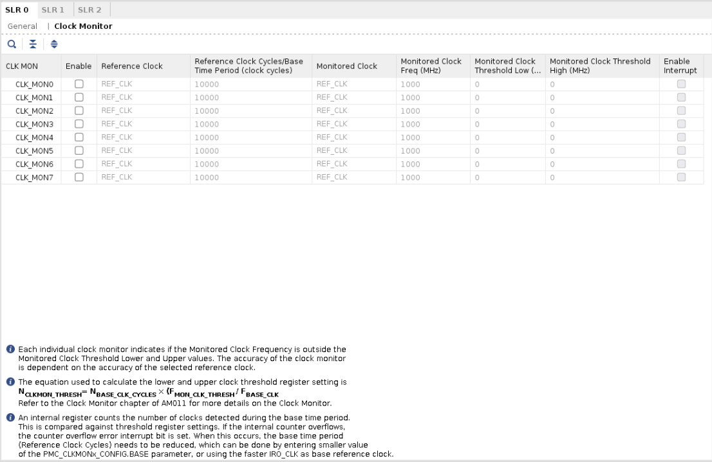
SLR1¶
General
Select ‘Enable/Update Glitch Detector Settings (after BootROM handoff)’. This allows VCC_PMC to be changed to match the voltage setting of the AVED design requirements (0.88V).
The pulse width will ignore glitches less than the setting of 0.5ns.
Note: AVED does not enable a specific glitch detection response. If a response were required, it would need to be set up in the Tamper tab. AVED does not set any Tamper settings.
Unselect ‘Known Answer Tests (KATs)’. AVED does not use the Cryptographic engines, so there is no need to perform this test.
https://docs.xilinx.com/r/en-US/ug1304-versal-acap-ssdg/Known-Answer-Tests
Clock Monitor
AVED does not enable clock monitoring. Leave all settings at default.
SLR2¶
General
Select ‘Enable/Update Glitch Detector Settings (after BootROM handoff)’. This allows VCC_PMC to be changed to match the voltage setting of the AVED design requirements (0.88V).
The Pulse Width will ignore glitches less than the setting of 0.5ns.
Note: AVED does not enable a specific glitch detection response. If a response were required, it would need to be set up in the Tamper tab. AVED does not set any Tamper settings.
Unselect ‘Known Answer Tests (KATs)’. AVED does not use the cryptographic engines, so there is no need to perform this test.
https://docs.xilinx.com/r/en-US/ug1304-versal-acap-ssdg/Known-Answer-Tests
Clock Monitor
AVED does not enable clock monitoring. Leave all settings at default.
Tamper¶
AVED does not exercise Tamper functionality. It could be used to set a systematic response to a tamper event.
https://docs.xilinx.com/r/en-US/ug1304-versal-acap-ssdg/Secure-Lockdown-Support-in-PLM
SLR0¶
General
Leave all settings at default.
Voltage
Leave all settings at default.
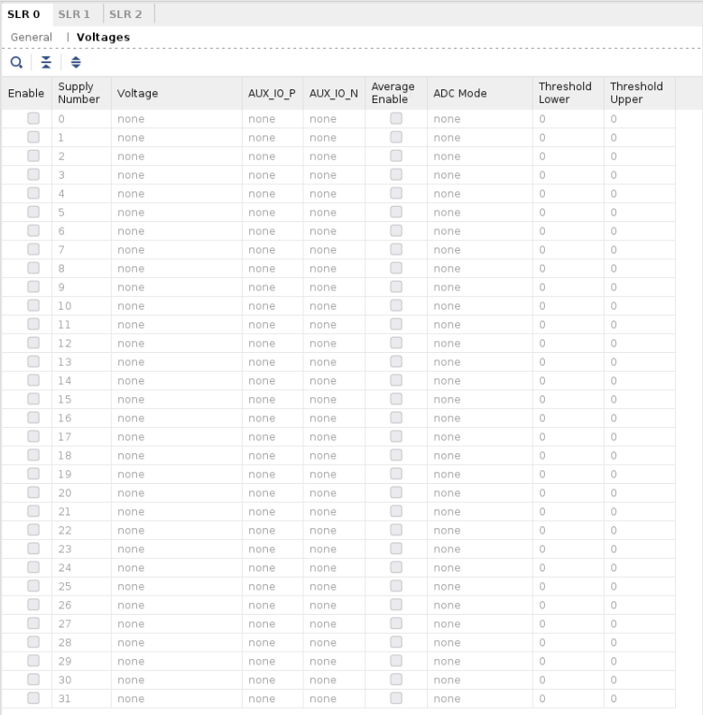
SLR1¶
General
Leave all settings at default.
Voltage
Leave all settings at default.
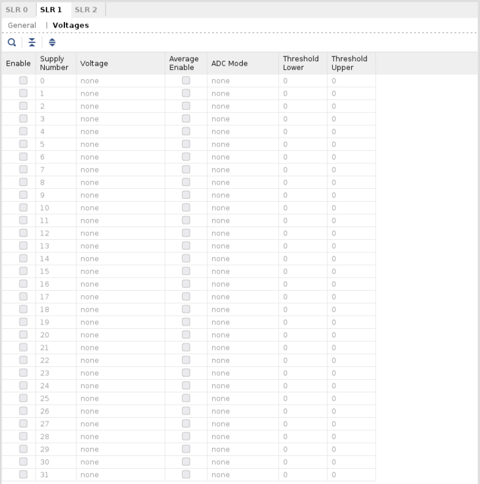
SLR2¶
General
Leave all settings at default.
Voltage
Leave all settings at default.
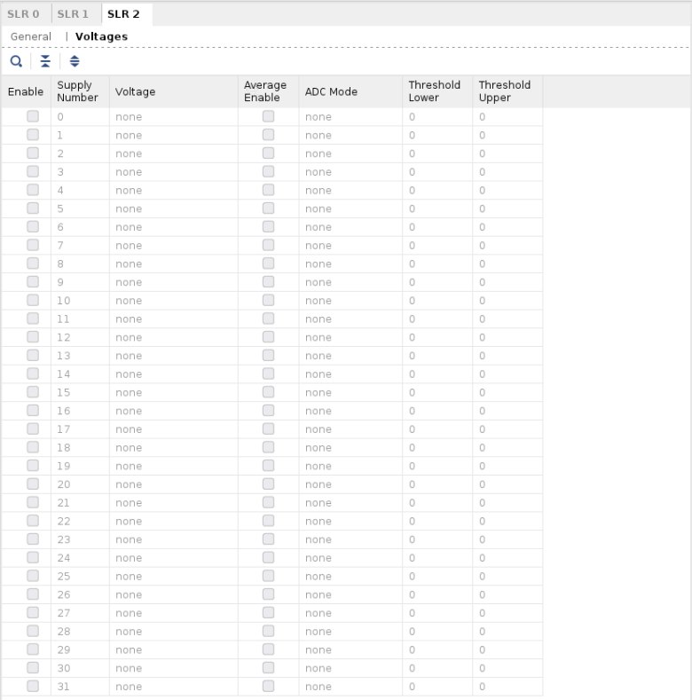
PS PL Interfaces¶
AVED only uses one PL reset from CIPS and it is enabled here. This reset is used to create multiple derived resets synchronized to various PL clock domains.
The PL Master AXI LPD interface connects to the RPU SmartConnect. This allows for RPU communication with the SMBus IP and the PCIe host through the General Command Queue (GCQ).
‘Number of PL Resets: 1’ creates the CIPS pl0_resetn output.
Select “M_AXI_LPD” and set “Data Width” to 32. This creates the 32-bit @100MHz AXI4 M_AXI_LPD port on CIPs.
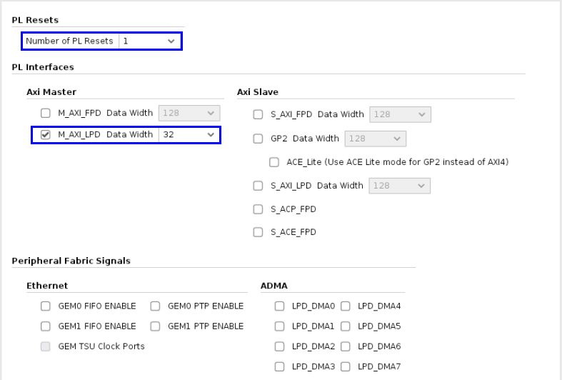
NoC¶
AVED uses two PS NoC connections on SLR0 for PMC and RPU communication to other NoCs. A description of the available options are here: https://docs.xilinx.com/r/en-US/pg352-cips/PS-NoC-Interfaces.
SLR0¶
RPU:
Select ‘RPU to NoC’: This creates the 128-bit @ 800MHz LPD_AXI_NOC_0 port on CIPS
PMC:
Select ‘PMC to NoC’: This creates the 128-bit @ 400MHz PMC_NOC_AXI_0 port on CIPS
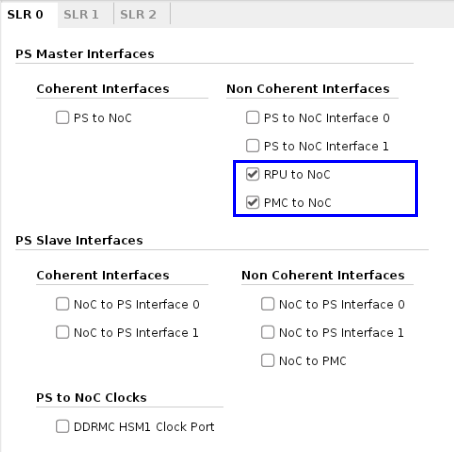
SLR1¶
AVED does not have any PMC NoC connections in SLR1.
{kind=link}
SLR2¶
AVED does not have any PMC NoC connections in SLR2.
{kind=link}
Interrupts¶
AVED uses two PL to PS LPD interrupts: one for the GCQ between the RPU (IRQ 0) and PCIe Host, and the other for SMBus (IRQ 1).
Enable LPD interrupts: IRQ 0 & 1. This creates the pl_ps_irq0 & pl_ps_irq1 interrupt ports on CIPS.
Enable Inter Processor Interrupts. The Inter Processor Interrupts allows one processor to interrupt another processor. The PMC and PSM Interrupts are enabled by default, and use the first three IPI agents. To allow R5 interrupts to the PMC and PSM, AVED uses four additional agents; IPI3, IPI4, IPI5, and IPI6. Two agents are used for each R5 processor. These can be changed as deemed necessary.
IPI 0:2: N/C
IPI 3:4: R5 0
IPI 5:6: R5 1
Power¶
Set the AVED MIO Bank voltages to match the AVED design requirements.
Bank0 [MIO 0:25]: LVCMOS 1.8V (default)
Bank1 [MIO 26:51]: LVCMOS 3.3V
Bank2 [MIO 0:25]: LVCMOS 3.3V
Bank3 [Dedicated]: LVCMOS 1.8V (default)
{kind=link}
PS PMC TCL Settings
Page Revision: v. 132